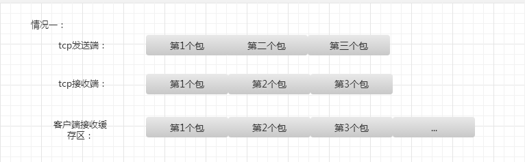
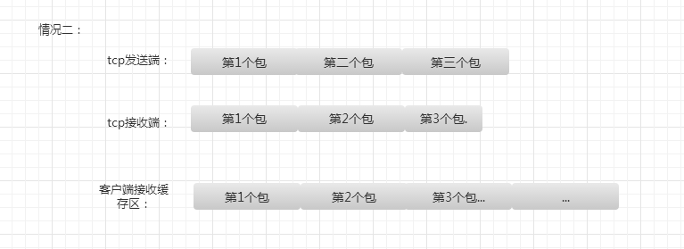
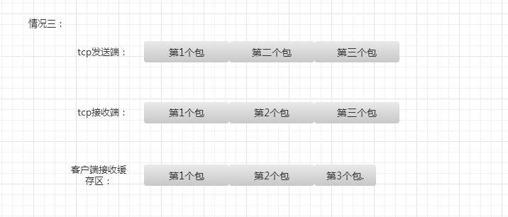
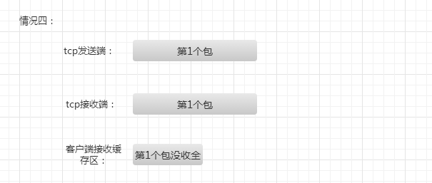

TCP（transport control protocol，传输控制协议）是面向连接的，面向流的，提供高可靠性服务。收发两端（客户端和服务器端）都要有一一成对的socket，
因此，发送端为了将多个发往接收端的包，更有效的发到对方，使用了优化方法（Nagle算法），将多次间隔较小且数据量小的数据，合并成一个大的数据块，
然后进行封包。这样，接收端，就难于分辨出来了，必须提供科学的拆包机制。即面向流的通信是无消息保护边界的。
UDP（user datagram protocol，用户数据报协议）是无连接的，面向消息的，提供高效率服务。不会使用块的合并优化算法，
由于UDP支持的是一对多的模式，所以接收端的skbuff(套接字缓冲区）采用了链式结构来记录每一个到达的UDP包，
在每个UDP包中就有了消息头（消息来源地址，端口等信息），这样，对于接收端来说，就容易进行区分处理了。 即面向消息的通信是有消息保护边界的。
TCP粘包我总结了几种情况

tcp发送端发送三个包过来，tcp接收缓存区收到了这三个包，而用户的读写缓存区比这三个包的总大小还大，
此时数据是接受完全的，用户缓存区读到三个包需要分开，这是比较好处理的。

第二种情况是因为用户的接收缓存区比tcp接受缓存区大，或者比tcp目前接收到的总数据大，那么用户缓存区读到
的数据就是tcp接收缓存区的数据，这是第一种情况的特例，这种情况需要判断那些包接受完全，那些包没接受完全。

第三种情况是用户的接受缓存区比tcp接受缓存区要小，导致用户缓存区读到的数据是tcp接收缓存区
的一部分，这其中有完整的包，也有残缺的包。

第四种情况是第三种情况的一个特例，用户缓存区的数据是不完全的，只是tcp缓存区的一部分。
对应特别大的那种包。
我提倡的解决办法就是首先实现一套从tcp缓存区中读取数据的数据结构和算法，因为tcp是面向
字节流的，将tcp缓存区中的数据读到用户缓存区里，这里我简单叫做outstreambuffer和instreambuffer，
这两个结构一个用于向tcp写，一个用于从tcp读。把tcp缓存区的数据尽可能多的读出来，不要判断是否是
完整的包，保证tcp缓存区没数据，这样会减少tcp粘包几率。
第二部就是将读到的数据，也就是instreambuffer中的数据进行分割，我叫做切包，切出一个个完整的包，
剩余不完整的留着下次继续接收。
第三步服务器应用层接口从instreambuffer中读取切割好的完整的包进行逻辑处理。
所以为了处理粘包和切包，需要我们自己设计包头，我设计的包头是八字节的结构体，
包含四字节的包id和四字节的包长度，这个长度既可以表示包头+消息体的长度，
也可以表示后面消息体的长度。我设计的是表示后面消息体的长度。
而上面所说的instreambuffer和outstreambuffer用户可以自己设计实现，也可以
利用成熟的网络库，我用的是libevent中的bufferevent，bufferevent实现了类似
的instreambuffer和outstreambuffer。
我设计的服务器部分代码如下，感兴趣可以去git下载：
https://github.com/secondtonone1/smartserver
简单列举下接收端处理读数据的过程。
1 | void NetWorkSystem::tcpread_cb(struct bufferevent *bev, void *ctx) |
networksystem是单例模式，处理读事件。因为静态函数tcpread_cb是libevent
设计格式的回调处理函数，在静态函数中调用非静态函数，我采用了单例调用。
1 | void NetWorkSystem::dealReadEvent(struct bufferevent *bev, void *ctx) |
tcphandler是我设计的切包类，这里通过bufferfd找到对应的instream和outstream，从而处理里面的数据完成切包。
1 | //处理读事件 |
这个函数判断是否读完一个消息，读完就开辟新的节点存储新来的消息，否则就将新来的消息放入没读完的节点里。
1 | void TcpHandler::tcpRead(UInt32 &inputLen) |
我的服务器还在完善中，目前已经能处理连续收到1万个包的切包和大并发的问题了，最近在设计应用层的序列化
和应用层消息回调。感兴趣可以下载看看，下载地址：https://github.com/secondtonone1/smartserver